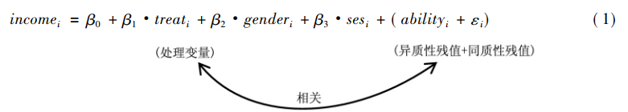

探寻事件之间的因果关系是人类不断追求真理的前进动力，因果知识在人类生存和发展中发挥了非常重要的作用，但要识别事件之间的因果关系并不是一件容易的事。
如何判定因果关系
根据 Mill (1851) 在其著作《逻辑体系中的界定，判定变量间因果关系需满足以下三个条件:
- 在时间顺序上，假设的“因”应该在“果”之前发生，即作为“因”的变量应为前 定变量，它应该在“果”变量之前就已经发生了。
- 如果假设的“因”发生了系统性的变动，那么“果”也应当呈现相应的变动。
- 假设的“因”对“果”的影响已经考虑了其他所有可能的解释，在考虑和控制了其他所有可能的解释后，假设的“因”对“果”依然具有相当的解释力。
第一个条件明确了因果关系的走向，若两个变量存在因果关系，只可能是先发生的变量影响后发生的变量。第二条件为相关条件，两个变量如果有因果关系，它们首先应是相关的。第三个条件是最难满足的条件，因为若要确定“因”对“果”有影响，就必须考虑并控制所有可能对因果两变量同时具有影响的其他变量。
因果推断的常用方法
在因果关系识别中，由于存在无限种“其他变量”对结果影响的可能性，实现完全控制这些因素难度极大。 为了解决这一难题，统计学家先后研发出多种方法，大致可以分为两大类:
一是经典的随机实验法
在随机实验下，每个个体被随机挑选接受处理( treatment)，每个个体是否接受处理不受其他任何变量的影响，这就保证了再也没有“其他变量”会对因果两变量同时具有影响，在绝对意义上实现了完全的控制。
二是自然实验方法
非随机分配处理组和控制组的试验称为自然试验，此类方法适用于观测数据( 即非随机实验数据)的因果推断。在观测数据中个体是否接受处理是非随机的，因此自然实验方法就必须采用一定的手段，将可能混淆因果关系的其他变量的影响剔除干净，从而得到假定的“因”对果的净效应( net effect) 。
虽然随机实验是自然科学研究进行因果关系分析的经典方法，但当我们将这一方法运用于人文社会科学研究时往往面临着许多困难。例如，随机实验运用于人类行为的研究时，有时会引发较大的道德争议，尤其是当处理手段对被试对象福利具有重大影响时，巨大的社会压力常使得随机分配难以得到彻底执行( Borman，2009)。这些困难迫使从事人文社会科学的研究者不断思考如何利用更易获得的观测数据通过自然实验方法来实现有效的因果关系推断。
由于自然实验方法利用的观测数据在处理组与控制组的分配是非随机的，两组人群在某些特征变量上很可能存在着显著差异，处于非平衡状态。在这些存在差异的特征变量中，有些变量是在现有数据条件下可以获得的或可以被观测到的，对于这些变量我们在回归模型中直接予以控制即可，但还有些变量是无法获得或不可观测的，因而无法直接控制。如果这些不可测变量与处理变量无关，那么不控制这些变量也不会引起因果关系偏估;但如果与处理变量存在相关性，不控制这些变量就会引起因果关系偏估，从而导致因果推断失效。典型的像样本选择偏差和遗漏变量问题。
样本选择偏差
准自然实验的核心思想是“反事实推断”，假定任何应国分析的研究对象都有两种条件下的结果：观测到的结果和未被观测到的结果，如果要研究上没上过大学与未来收入的关系，则“上大学能提高学生的收入”是一种事实称述法，那么，反事实的说法就是“如果上过大学的这些人没有上大学，他们的收入会怎样？”。
最理想的实验就是将上过大学人作为处理组，并这些人没有上过大学为控制组，通过对比处理组和控制组人的收入就能得出上大学是否能提高收入，显然这是不可能的，一个人要么上过大学，要么没上过大学，反事实就是在处理状态下的潜在结果，即在上过大学状态下没上大学的结果，当然现实情况下我们无法观测到这种潜在结果，意味着数据是缺失的。
反事实模型
假定有 \(N\) 个个体，每一个处在处理中的个体 \(i\) （i=1,2, ,N）都将有两种潜在结果（ \(Y_i(0)\) , \(Y_i(1)\) ），分别对应着未被处理状态和处理状态的潜在结果 。那么对一个个体进行处理的效应标记为 \(\delta_i\) ，表示干预状态的潜在结果与未干预状态的潜在结果之间的差，即:
\[\delta_i=Y_i(1)-Y_i(0)\]
用 \(D_i=1\) 表示接受处理， \(D_i=0\) 表示未接受处理， \(Y_i\) 表示所有测试的结果，那么反事实框架可以表示为：
\[Y_i=(1-D_i)Y_i(0)+D_iY_i(1)\]
这个模型表明，两种结果中的哪一种将在现实中被观测到，取决于干预状态，即D的状态。
用ATT(Average treatment effect for the treated)来测度个体在处理状态下的平均处理效应，即表示个体i在处理状态下的观测结果与其反事实的差，称为平均处理效应的标准估计量：
\[ATT=E[\delta_i|D=1]=E[Y_i(1)|D=1]-E[Y_i(0)|D=1]\]
很明显，反事实 \(E[Y_i(0)|D=1]\) 是我们观测不到的，只有使用个体 \(i\) 在未处理状态下的观测结果 \(E[Y_i(0)|D=0]\) 作为替代来估计个体在处理状态下的潜在结果——反事实，进而公式可以表示为：
\[\hat{ATT}=E[Y_i(1)|D=1]-E[Y_i(0)|D=0]\\ \hspace{1.3cm}=E[Y_i(1)|D=1]-E[Y_i(0)|D=1]\\ \hspace{1.3cm}+E[Y_i(0)|D=1]-E[Y_i(0)|D=0]\\ =ATT+Selection Biase\hspace{0.8cm}\]
当 \(E[Y_i(0)|D=1]-E[Y_i(0)|D=0]\neq 0\) 时， 平均处理效应的标准估计量存在选择偏差，即同一种潜在结果会因为样本选择而不同。
遗漏变量问题
我们继续以上大学是否对收入有影响来说明遗漏变量导致的内生性问题，下面举例说明该问题：

如方程( 1) ，结果变量( income) 表示个人的收入水平，处理变量( treat) 取值 1 和 0，分别表示个人上没上过大学。个人上没上过大学不是随机分配的，是由高考成绩决定的，而高考成绩的高低又受制于许多因素，因此上过大学( 处理组) 和没上过大学( 控制组)两组人必定在不少特征变量上存在差异。这些变量有些是容易获得或可观测的，如个人的性别( gender) 与家庭社会经济背景( ses)等，而有些是难以观测到的，如个人的天生能力( ability) 。天生能力 对个人是否上大学和收入水平肯定有影响，如果该变量不能得到控制，就会进入到残值中，使得残值由ε变为了ability+ε。原本残值ε与处理变量是无关的，而新残值(ability+ε) 由于包含了能力变量，就变得与处理变量相关了。当残值与处理变量有关时，残值就具有了异质性特征，会引发估计偏差，经济学家称其为“内生性”问题
为了解决准自然实验中的内生性问题，(Rosenbaum and Rubin 1983, 1985)提出可以通过匹配，获得一种“反事实”的估计，这种思想直接促成了PSM模型的诞生。Ashenfelter and Card (1984) 在研究CETA项目培训的收益时首次提出了双重差分模型（DID），受到了学术界的极大重视，在计量经济学和社会学中广泛应用,2021年 David Card还因使用该方法研究劳动经济学问题荣获诺贝尔学奖。(Heckman, Ichimura, and Todd 1997, 1998) 首次提出将 PSM 模型与 DID 模型相结合的思路，并指出 PSM 模型可以为DID模型筛选控制组这一结合点，使得 PSM-DID 模型拥有了一定的理论基础。
1. PSM模型
为了解决样本选择偏差带来的内生性问题，倾向得分匹配法被发明了出来，一个最直观的思想就是从控制组和处理组中筛选出特征完全相同的匹配样本，这样，控制组和处理组的唯一差异就在于是否被处理，从而可以达到与随机实验一样的效果。 但特征完全相同的样本并不存在，学者们只能退而求其次，寻找特征相近的样本来近似。
当特征变量只有一个时，处理组和控制组针对 \(x\) 的匹配标准是清晰的，控制组和处理组个体特征 \(x\) 越接近，这两个个体特征就越相近。但如果 \(x\) 不再只是一个变量，而是一组变量时，所谓“近”的判断标准也就变得模糊起来。针对这个问题，Rosenbaum and Rubin (1983) 解决了维度问题，并证明了如果基于 \(x\) 相关变量的匹配是有效的，那么基于 \(x\) 变量组的倾向得分的匹配也将同样有效，从而奠定了PSM的理论基础。
在PSM模型应用中，首先尽可能多地找到处理组与控制组之间存在差异的变量， 组成匹配变量集，记为 \(x=(x_1,x_2,\dots , x_n)\),然后使用变量集\(x\)对分组变量treat( 0－1) 进行参数回归，常见为 logit( probit) 回归，具体如式( 1) 所示:
\[logit(treat)=x^\prime\beta+\epsilon \hspace{2cm}(1)\]
采用式( 1) 所得回归系数矩阵 \(\beta\)， 通过式( 2) 即可计算出 \(ps\) 值。
\[ps_i=\frac{exp(x^\prime_i\beta)}{1+exp(x^\prime_i\beta)}\]
其中， \(x_i\)代表个体 \(i\) 的匹配变量集，式( 2) 的本质是将多维度的匹配变量，拟合成 1 个一维且介于［0，1］之间的变量 \(psi\) ，即个体 \(i\) 进入处理组的概率。然后根据特定的匹配方式，通过 \(ps\) 值将处理组与对照组匹配在一起，最后在处理组与对照组间进行对比，进而识别出二者之间的差异
倾向匹配得分法使用的情形
从数据角度来说，倾向得分匹配法只适用于截面数据。从使用情形来看，倾向评分匹配法适用于两类情形:第一，在观察研究中，对照组与实验组中可直接比较的个体数量较少时，可以通过匹配寻找更多匹配样本。第二，衡量个体特征的参数很多时，采用得分法很容易找到匹配样本。
2.双重差分模型
双重差分模型（difference-in-difference，DID）是近年来多用于计量经济学中对于公共政策或项目实施效果的定量评估的方法。
DID的主要思想是通过对比处理组的平均变化和控制组的平均变化在政策实施前后之差获得政策处理效应，DID模型基准回归方程如下:
\[Y_i=\alpha_0+\alpha_1du+\alpha_2 dt+\alpha3du\times dt+\epsilon_{it}\]
其中， \(du\) 为分组虚拟变量，若个体 \(i\) 受政策实施的影响，则个体 \(i\) 属于处理组，对应的 \(du\) 取值为1，若个体 \(i\) 不受政策实施的影响，则个体 \(i\) 属于对照组，对应的 \(du\) 取值为0。 \(dt\) 为政策实施虚拟变量，政策实施之前 \(dt\) 取值为0，政策实施之后 \(dt\) 取值为1。 \(du\times dt\) 为分组虚拟变量与政策实施虚拟变量的交互项
双重差分模型使用前提：
- 该模型只能用于面板数据
- 政策对于实施对象选择来说是随机的
- 处理组与控制组政策实施前有相同的趋势
- 政策无溢出效应
Ashenfelter, Orley C, and David Card. 1984. “Using the Longitudinal Structure of Earnings to Estimate the Effect of Training Programs.” National Bureau of Economic Research Cambridge, Mass., USA. https://www.nber.org/system/files/working_papers/w1489/w1489.pdf.
Heckman, James J, Hidehiko Ichimura, and Petra Todd. 1998. “Matching as an Econometric Evaluation Estimator.” The Review of Economic Studies 65 (2): 261–94. https://doi.org/10.1111/1467-937X.00044.
Heckman, James J, Hidehiko Ichimura, and Petra E Todd. 1997. “Matching as an Econometric Evaluation Estimator: Evidence from Evaluating a Job Training Programme.” The Review of Economic Studies 64 (4): 605–54. https://doi.org/10.2307/2971733.
Mill, John Stuart. 1851. “A System of Logic (Ed.).” E. Nagel (New York, 1950), Book I.
Rosenbaum, Paul R, and Donald B Rubin. 1983. “The Central Role of the Propensity Score in Observational Studies for Causal Effects.” Biometrika 70 (1): 41–55. https://doi.org/10.1093/biomet/70.1.41.
———. 1985. “Constructing a Control Group Using Multivariate Matched Sampling Methods That Incorporate the Propensity Score.” The American Statistician 39 (1): 33–38. https://www.tandfonline.com/doi/abs/10.1080/00031305.1985.10479383.